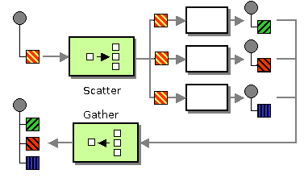

Programmation réactive
Orchestration de services
au sein de la JVM
Ozan Gunalp
Ozan GUNALP
Contributeurs
LesFurets.com
- Comparateur d'assurances
- Nous solicitons les web-services pour avoir les meilleurs prix
- Image : PPS chez LesFurets.com
L'orchestrator de service

- 20-40 pps par minute (confidentiel ?)
Problème
Illusions de l'informatique distribuée
- 1. The network is reliable
- 2. Latency is zero
- 3. Bandwidth is infinite
- 4. The network is secure
- 5. Topology doesn't change
- 6. There is one administrator
- 7. Transport cost is zero
- 8. The network is homogeneous
Problème
if (executor.getActiveCount() >= POOL_SIZE) {
throw new NoExecutorAvailable("ThreadPool buzy");
}
Problèmes soujacents
- Passage à l'echelle: + de ressources =? + de perf
- Maintenabilité : Clairté de code
- Gestion de SLA / résilience
Traitement asynchrone
- Scalability & Performance : répartir les tâches sur plusieurs ressources
- Résilience : isolation des erreurs
Solutions classiques pour traitement asynchrone
- Gestion des threads & locks, appels bloquantes
- Queues de message/tâches avec buffering
- Event loops avec callbacks
TODO : problèmes avec les abstractions classiques : accès aux ressources partagées / gestion des threads bloquante / callback hell / thread starvation
Systèmes réactives
- Responsive - they respond in an acceptable time
- Elastic - they scale up and down
- Resilient - they are designed to handle failures gracefully
- Asynchronous - they interact using async messages
!= Reactive programming
Programmation réactive
- Evenements asynchrones
- Flux de données déclarative
TODO : emphasize difference between reactive systems
Abstractions pour la programmation réactive
- Reactive Streams
- Promes/Future/CompletableFuture
- Actor model (?)
Reactive Streams
Streams ?
Collection : iterable group of items with definite size = define data
Stream = operations on a unbounded group of items = define work
TODO : code sample, immutability
Reactive Streams
Définit les opérations sur un group d'evénements
Publisher Subscriber
RxJava
Observables + Operators + Scheduling
Sépare les
Orchestrateur classique
TODO : runnables, waitAll
Orchestrateur parallel stream
TODO : Gestion de ressources
Orchestrateur CompletableFuture
TODO : gestion des threads de timeout
Orchestrateur RxJava Observables
Orchestrateur RxJava2 Flowable
Scheduling
- Pool de threads séparés par backend ou global ?
- Buffering
Backpressure
- RxJava2 vs RxJava : Flowables ajoute
- Différentes stratégies
Java 9 Flow
- Publisher Subscriber
- Implementation de reactive-streams specification
- Contient très peu d'implementation
Best practices & Pitfalls RxJava
- Différence entre subsribeOn vs observeOn
- Configuration de backpressure
- Gestion des erreurs
- Creation des Observable/Flowable
Perspectives
Gestion de SLA
- Choisir la taille de buffer (compension de backpressure) par backend
- Implementer circuit breaker